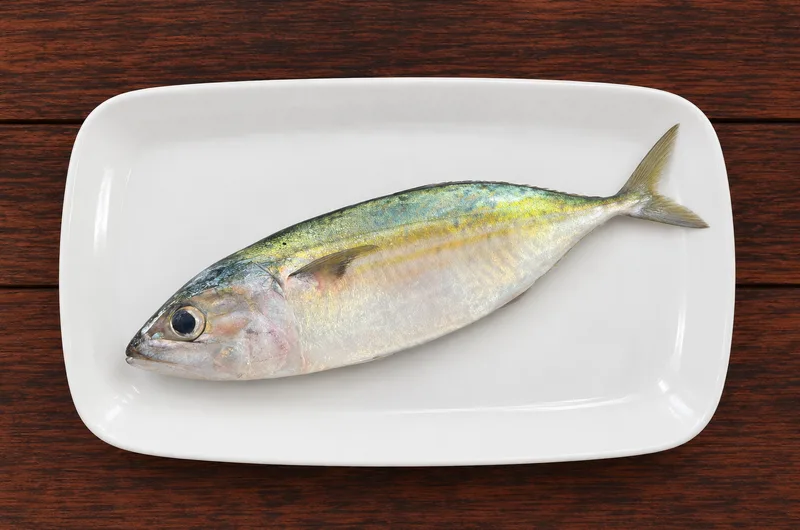
Indian Mackerel
Bangra
Ask about the current catch and whole-fish sizes.
Whole cleaned on request
Provides protein and omega-3 fats. Source
Choose your seafood, weight and preferred cut. We’ll confirm today’s prices and availability on WhatsApp.
21 products

Bangra
Ask about the current catch and whole-fish sizes.
Whole cleaned on request
Provides protein and omega-3 fats. Source
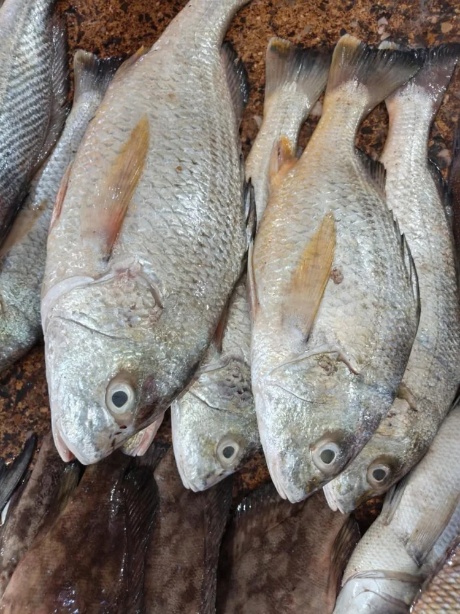
Request today’s availability and preparation options.
Whole cleaned on request
Fish provides dietary protein. Source

Giser
Ask about whole fish, steaks or fillets.
Whole, steaks or fillets on request
Fish provides dietary protein. Source
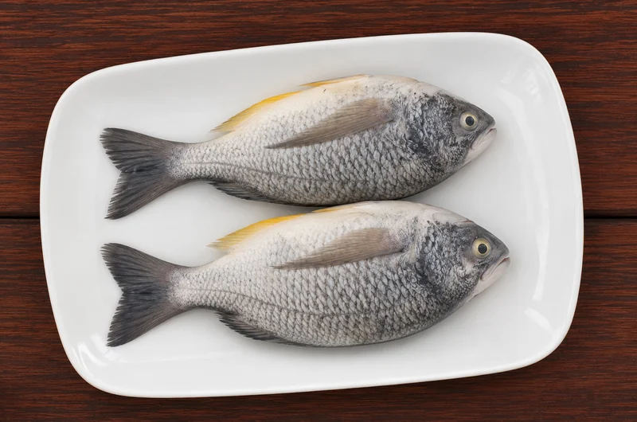
Request today’s availability and preparation options.
Whole cleaned on request
Fish provides dietary protein. Source
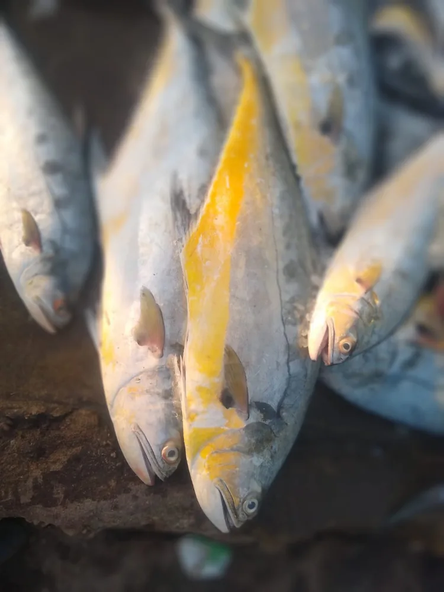
Request today’s availability and preparation options.
Whole cleaned on request
Fish provides dietary protein. Source
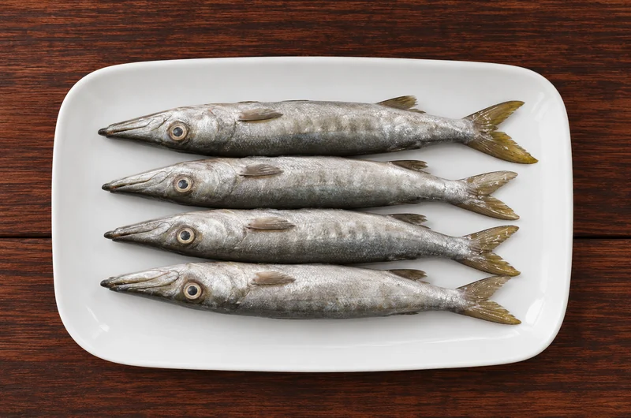
Safed Kund
Ask us about size grades and portions.
Whole, steaks or fillets on request
Fish provides dietary protein. Source
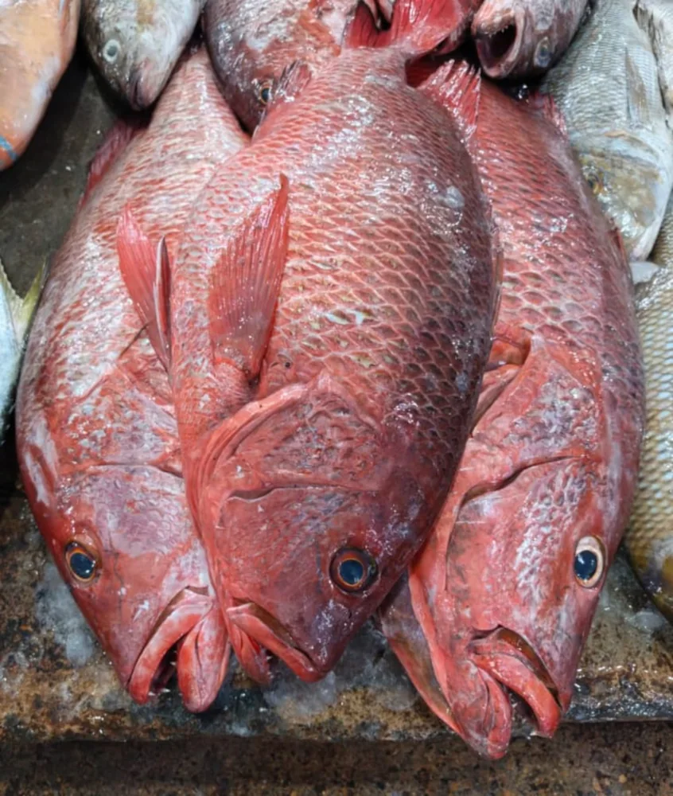
Kanarcha
Ask about today’s sizes and available cuts.
Whole, steaks or fillets on request
Fish provides dietary protein. Source
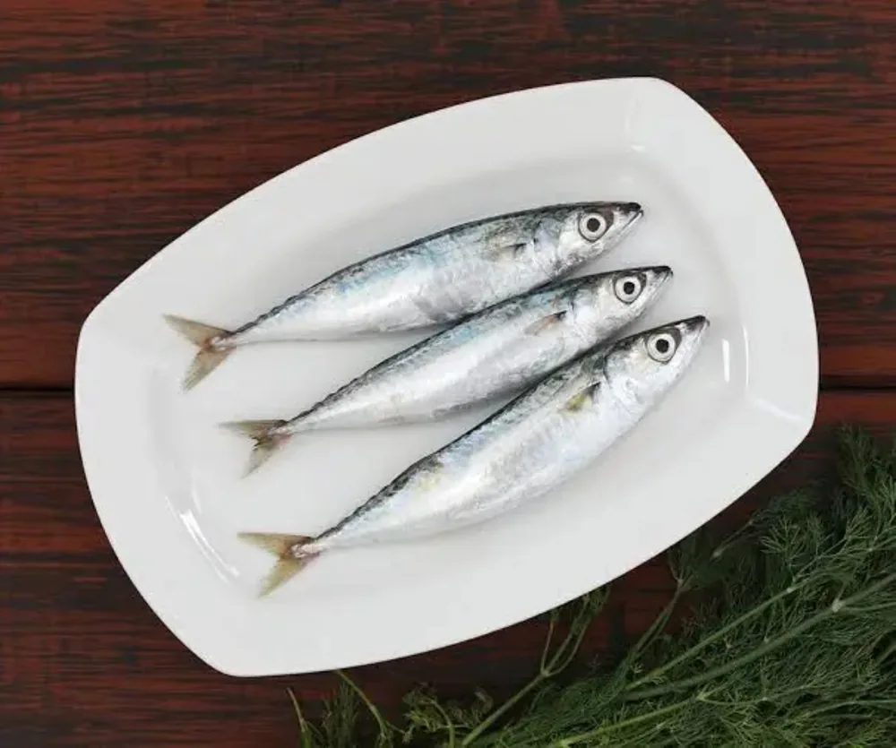
Small fish with a distinctive, savoury flavour.
Whole cleaned on request
Anchovies provide protein and omega-3 fats. Source
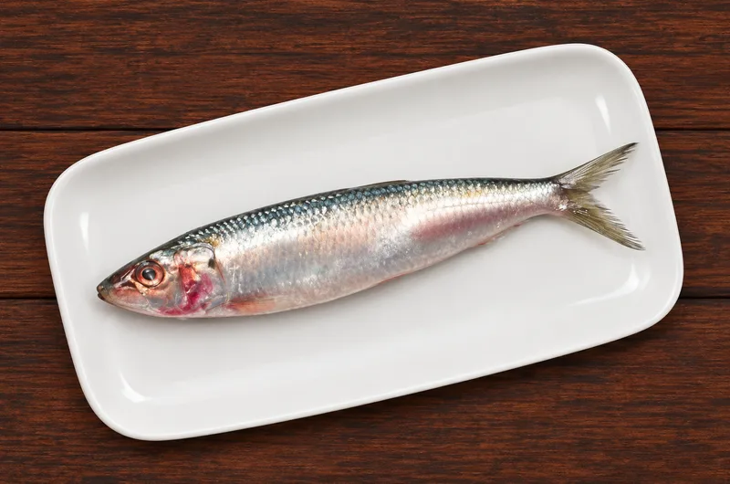
Small fish for grilling or masala fry.
Whole cleaned on request
Provide the omega-3 fats EPA and DHA. Source
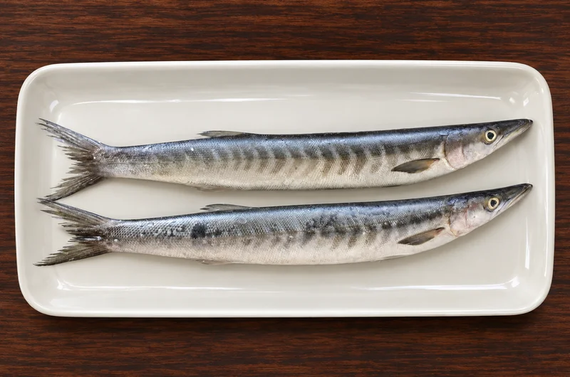
Kala Kund
Ask us about size grades and portions.
Whole, steaks or fillets on request
Fish provides dietary protein. Source
Sawtooth barracuda reference photo. Nasser Halaweh · CC BY 4.0. Background restyled with AI.
Ask about available sizes and preparations.
Whole, steaks or fillets on request
Fish provides dietary protein. Source
Mushka
Request whole cleaned fish or ask what cuts are available.
Whole cleaned on request
Fish provides dietary protein. Source

Heera
Mild, firm fish for grilling, frying, or a whole roast.
Whole, steaks or fillets on request
Provides protein. Source
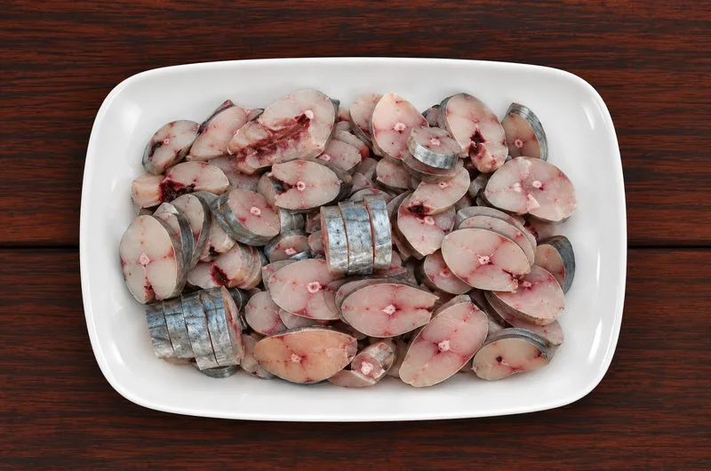
Surmai
Meaty fish for pan-fried steaks or curry.
Whole, steaks or fillets on request
Fish provides dietary protein. Source

Safed Paplet
Delicate flesh for whole roasting or pan-frying.
Whole cleaned on request
Fish provides dietary protein. Source
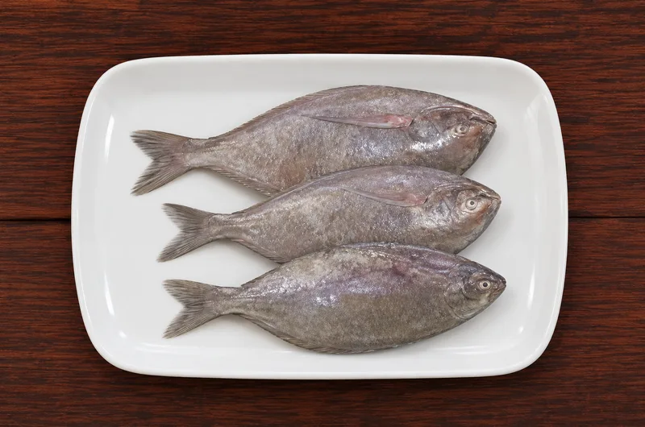
Kala Paplet
A firm fish for masala fry or grilling.
Whole cleaned on request
Fish provides dietary protein. Source
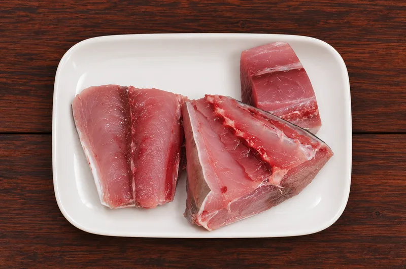
Dawan
Meaty cuts for grilling or a hearty curry.
Whole, steaks or fillets on request
Tuna provides protein. Source
Rawas
Ask about the current catch and available cuts.
Whole, steaks or fillets on request
Fish provides dietary protein. Source

Larger prawns for grilling or seafood platters.
Whole or peeled on request
Prawns provide protein and selenium. Source
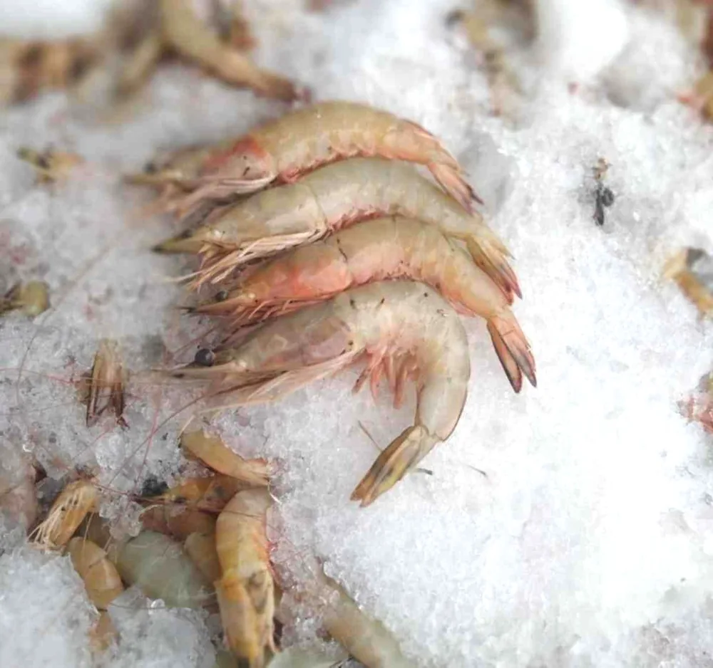
Jeera
A versatile size for curries and biryani.
Whole or peeled on request
Prawns provide protein and vitamin B12. Source
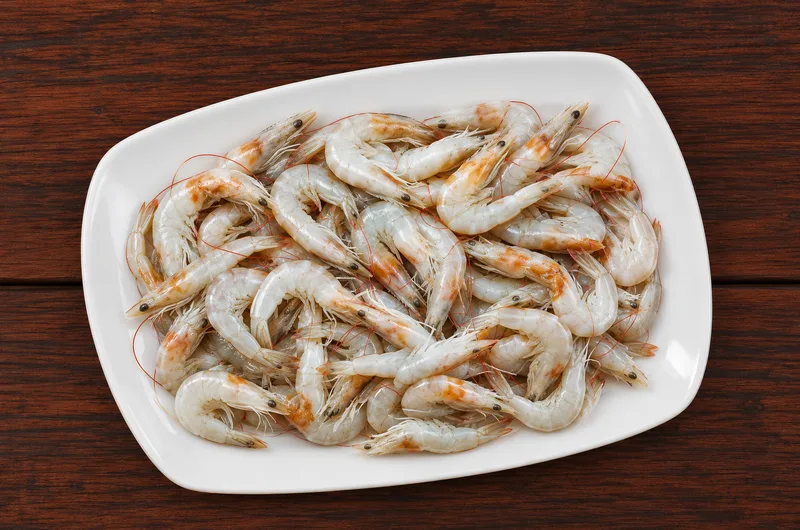
Bite-sized prawns for pulao and stir-fries.
Whole or peeled on request
Prawns provide selenium and vitamin B12. Source
No seafood matches your search.